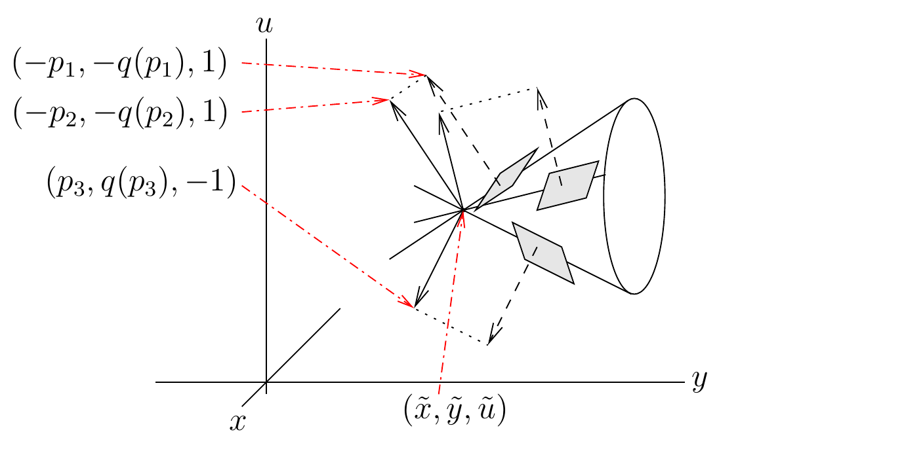

Tentang unit ini. Unit kumulatif ini menambahkan
pembahasan persamaan diferensial parsial orde pertama umum sampai batas
sumber beku baris 974. Rumus, penomoran, koreksi sumber tercatat, dan
Kerucut Monge dipertahankan.
Kita meninjau persamaan diferensial parsial berbentuk
(1.3.1)
dengan
cukup terdiferensialkan.
Tujuannya adalah mencari permukaan terdiferensialkan
yang memenuhi Persamaan
(1.3.1) dan memuat kurva
yang diberikan oleh
dengan
suatu interval terbuka, dan
,
,
merupakan fungsi-fungsi terdiferensialkan. Ini adalah masalah
Cauchy bagi persamaan diferensial parsial orde pertama umum.
Seperti pada persamaan diferensial parsial kuasilinear, kita mempunyai
definisi berikut.
Definisi 1.3.1. Suatu permukaan
yang memenuhi Persamaan
(1.3.1) dan memuat kurva
yang diberikan disebut permukaan integral bagi Persamaan
(1.3.1).
Seperti pada persamaan diferensial parsial kuasilinear, kita akan
mencari keluarga kurva
yang menghasilkan permukaan integral
bagi Persamaan
(1.3.1) dan setiap kurva
memotong
secara transversal di
.
Sayangnya, persamaan diferensial biasa yang menentukan keluarga kurva
ini tidak dapat dibaca langsung dari persamaan diferensial parsial
sebagaimana yang dilakukan untuk persamaan diferensial parsial
kuasilinear.
Untuk persamaan diferensial parsial kuasilinear, kita tidak perlu
meninjau bidang singgung permukaan integral secara eksplisit, tetapi
untuk persamaan diferensial parsial umum kita harus melakukannya.
Andaikan
adalah permukaan yang memenuhi Persamaan
(1.3.1) dan misalkan
merupakan titik pada permukaan ini. Persamaan bidang singgung permukaan
integral di
adalah
(1.3.2)Persamaan
(1.3.1) memberikan hubungan antara
dan
;
yakni,
Jika digabungkan dengan turunan di sepanjang kurva
,
hubungan ini memungkinkan kita menentukan bidang singgung permukaan
integral.
Persamaan
untuk
,
,
dan
Pembahasan pada paragraf sebelumnya dapat digunakan untuk menurunkan
syarat-syarat yang harus dipenuhi oleh kurva-kurva
dengan
.
Persamaan
merepresentasikan sebuah kurva pada bidang
,.
Kita memperoleh keluarga satu-parameter bidang singgung yang
didefinisikan oleh
Keluarga bidang singgung ini, yang semuanya memuat titik
,
menghasilkan sebuah “kerucut” dengan puncak di
.
Kerucut ini disebut Kerucut Monge. Untuk
memvisualisasikan kerucut ini, bayangkan daerah yang diselubungi oleh
keluarga satu-parameter bidang singgung yang semuanya memuat titik
.
Hal ini diilustrasikan pada Gambar 3.

Kerucut Monge untuk persamaan diferensial
parsial orde pertama umum.
Misalkan
Kita mengasumsikan bahwa
dalam Persamaan
(1.3.1) tidak degenerat pada
;
yakni,
untuk semua
.
Tanpa mengurangi keumuman, kita dapat mengasumsikan bahwa
secara lokal di sepanjang kurva
.
Dengan demikian, kita dapat menulis
secara lokal.
Jika terhadap
kita diferensialkan persamaan
(1.3.3)
yang menyatakan bidang singgung di
,
kita memperoleh
Menurut Teorema Fungsi Implisit, karena kita mengasumsikan bahwa
,
kita mempunyai
Oleh karena itu,
Persamaan Persamaan
(1.3.4) dan Persamaan
(1.3.5) menghasilkan representasi standar sebuah garis yang termuat
dalam bidang yang didefinisikan oleh Persamaan
(1.3.3); bentuk tanpa pembagian tersebut juga memuat titik
puncaknya. Garis ini berada pada bidang singgung permukaan integral
di
jika
Arah garis ini di
adalah
Seperti pada persamaan diferensial parsial kuasilinear orde pertama, hal
ini mengisyaratkan bahwa permukaan integral merupakan gabungan keluarga
kurva
,
dengan setiap kurva
didefinisikan oleh
sedemikian sehingga
(1.3.6) dan
dengan
dan
fungsi-fungsi belum diketahui yang akan ditentukan kemudian, dan
adalah domain solusi untuk
yang diberikan. Untuk menentukan
dan
,
kita memerlukan dua persamaan diferensial tambahan yang berkaitan dengan
bidang-bidang singgung permukaan integral yang dicari.
Jika untuk sementara kita mengasumsikan bahwa
dan
juga telah ditentukan, dan bahwa
(1.3.7)
maka kita dapat menggunakan Teorema Pemetaan Invers untuk menyatakan
dan
secara lokal sebagai fungsi dari
dan
.
Mensubstitusikan ungkapan
dan
ini ke
,
,
dan
menghasilkan
,
,
dan
.
Seperti yang kita lakukan untuk persamaan diferensial parsial
kuasilinear orde pertama, kita tetap menggunakan
,
,
dan
untuk menyatakan fungsi-fungsi dari
dan
,
sekaligus fungsi-fungsi dari
dan
.
Kita mempunyai
untuk
dan
,
serta kesamaan-kesamaan serupa untuk
dan
.
(1.3.8)
jika kita ingin memenuhi syarat-syarat konsistensi
Untuk penurunan berikut, andaikan
pada daerah yang ditinjau. Asumsi ini menjamin keberadaan turunan kedua
dan kesamaan turunan campuran yang digunakan di bawah.
Jika kita mengasumsikan bahwa Persamaan
(1.3.8) dipenuhi dan mendiferensialkan persamaan-persamaan dalam Persamaan
(1.3.8) terhadap
,
kita memperoleh
(1.3.9) dan
(1.3.10)
Selain itu, jika
merupakan permukaan integral, maka kita mempunyai
dengan
dan
.
Jika kita mendiferensialkan
terhadap
,
kita memperoleh
di
.
Oleh karena itu,
(1.3.11)
di
.
Serupa dengan itu, jika kita mendiferensialkan
terhadap
,
kita memperoleh
di
.
Oleh karena itu,
Persamaan
(1.3.6) dan Persamaan
(1.3.13) mendefinisikan sistem lima persamaan diferensial biasa bagi
lima fungsi yang belum diketahui,
,
,
,
,
dan
.
Atribusi dan hak. Karya sumber oleh Benoit Dionne
dilisensikan berdasarkan Creative
Commons Attribution-NonCommercial-ShareAlike 4.0 International.
Terjemahan ini menandai perubahan dan menggunakan lisensi komponen yang
sama. Ini bukan terbitan atau dukungan resmi Benoit Dionne maupun
University of Ottawa.